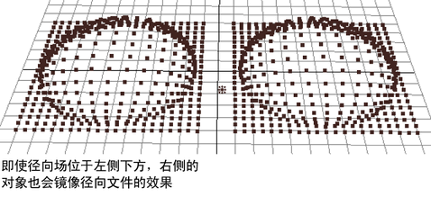

可以复制来自动力学（例如场）的带或不带原始输入连接的 nParticle 对象。
复制带输入连接的 nParticle 对象
- 选择 nParticle 对象。
- 选择 >
 。
。 - 在“特殊复制选项”(Duplicate Special Options)窗口中，启用“复制输入连接”(Duplicate Input Connections)。如果该选项处于禁用状态，请首先禁用“复制输入图表”(Duplicate Input Graph)。
- 单击“特殊复制”(Duplicate Special)。
- 根据需要重新定位复制。
“复制”(Duplicate)菜单项从动态效果复制传入连接，因此影响原始对象的相同效果将影响复制。这不会从粒子对象复制传出连接。这意味着，如果从某个位置将一个场应用到原始对象，该复制粒子对象将受来自相应局部空间位置的影响。
可以让场影响来自世界空间位置的复制。在复制粒子形状节点的依存关系图中，断开该场到粒子形状节点的输入连接，然后使用“动力学关系”(Dynamic Relationships)编辑器将其连接到场。
示例
假设您创建了一个粒子栅格，并将它连接到下方的径向场。使用“复制输入连接”(Duplicate Input Connections)创建粒子栅格的复制，然后移动复制栅格到一个新位置。右侧对象镜像径向场的效果，即使径向场被放置在左侧对象。

复制不带输入连接的 nParticle 对象
- 选择 nParticle 对象。
- 选择 > 。
- 在“特殊复制选项”(Duplicate Special Options)窗口中，启用“复制”(Copy)而不是其他选项，然后单击“特殊复制”(Duplicate Special)。
- 根据需要重新定位复制。
- 选择。
为使 nParticle 对象的动态效果在随后起作用，该对象需要到其“当前时间”(Current Time)属性的传入连接。默认情况下，场景的预定义时间变量将提供该输入。如果选择编辑 > 复制(Edit > Duplicate)并使用默认选项，它不会复制传入连接到新对象。因此，新对象将无法使用动力学，除非您选择。
- 回放和播放动画。